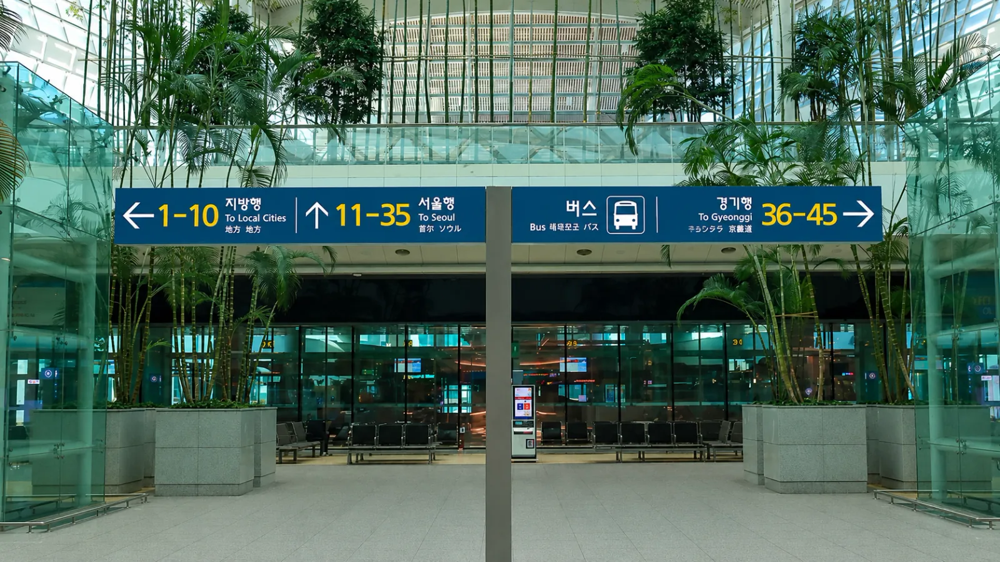
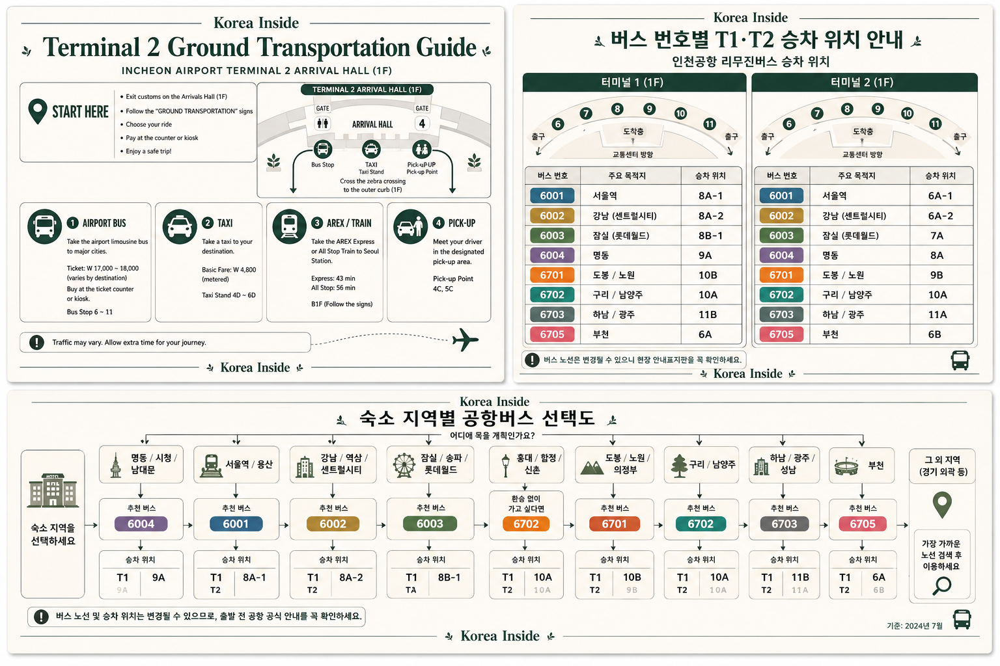
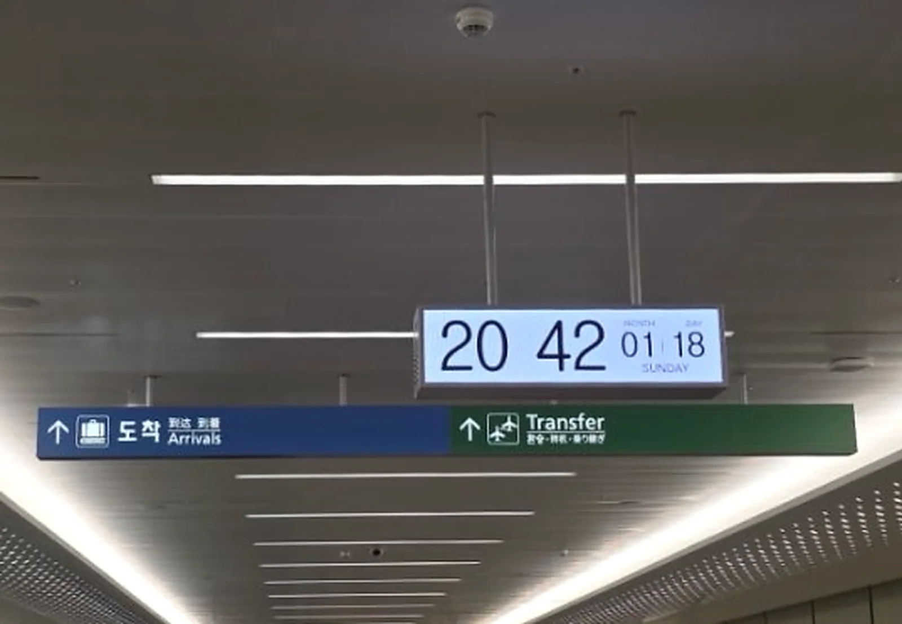
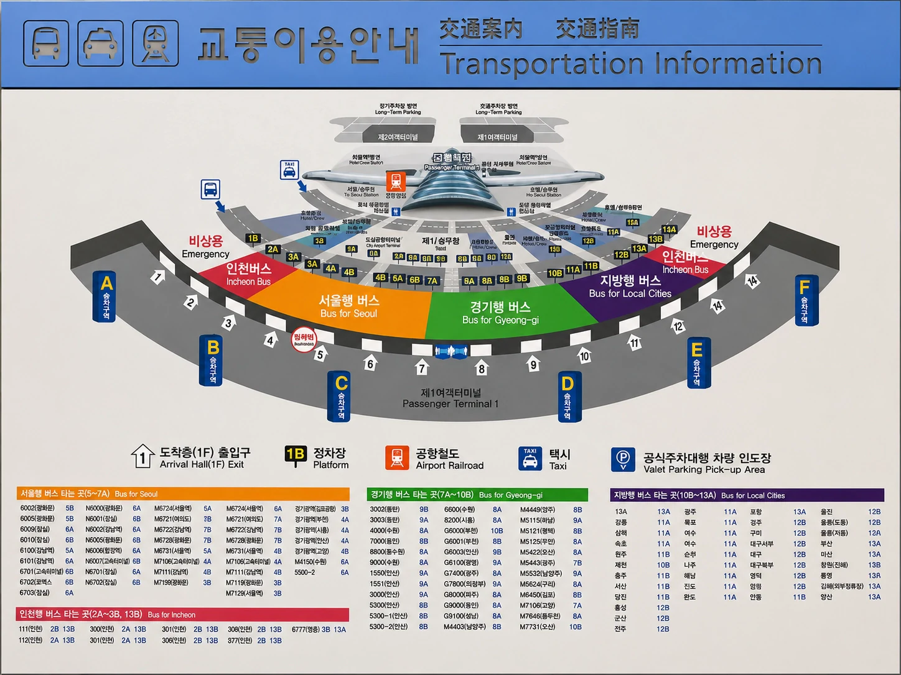
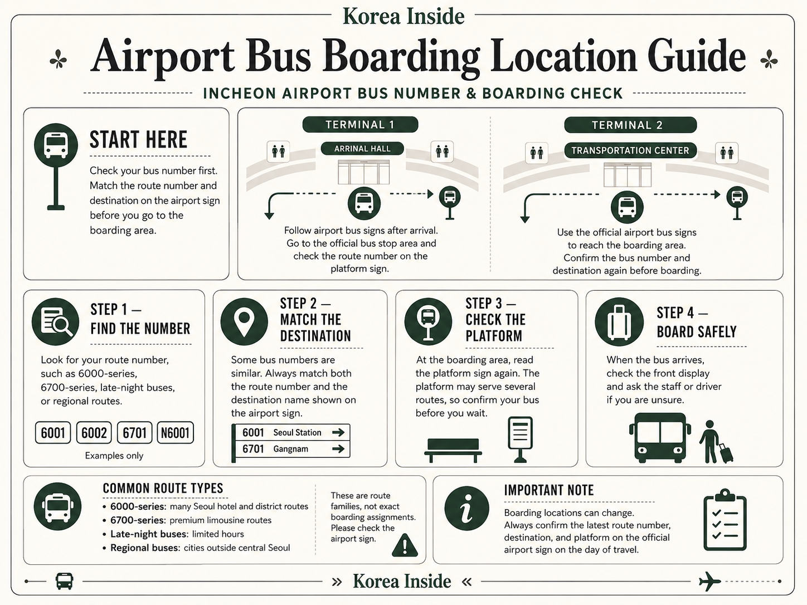
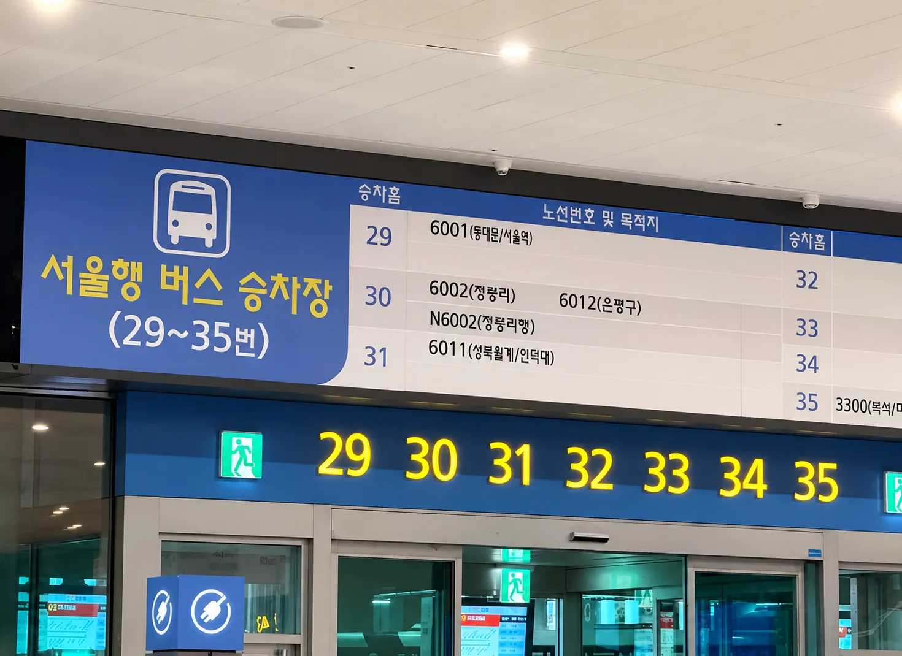
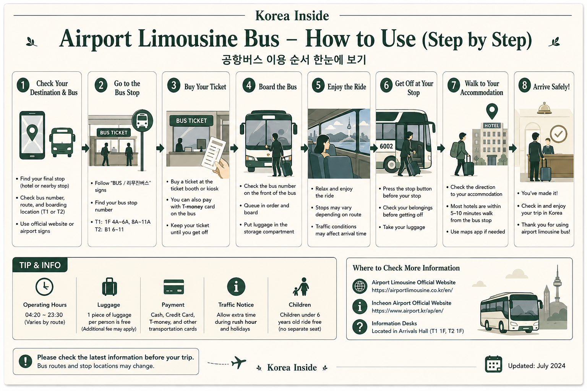

A bus is especially useful when there is a stop within an easy walk of your hotel. For Hongdae, Seoul Station or another address with a simple rail connection, AREX may still be easier. Outside Seoul, search by the actual city or terminal rather than starting with a Seoul limousine route.

Start with the Stop, Not the Bus Number
The easiest airport-bus trip starts at the hotel, not at the airport. Find your accommodation on a Korean map, then look for bus stops that leave you with a reasonable final walk.
A stop 300 metres away on a flat street can be excellent. A slightly closer stop on the other side of a wide intersection, up a hill or several levels below the hotel can be much less pleasant with two suitcases.
That matters especially in large districts such as Myeongdong, Jongno, Dongdaemun, Gangnam and Hongdae. Two hotels described as being in the same neighborhood can have very different airport-bus access.
Seoul
For a Seoul hotel, an airport limousine is most attractive when the stop is genuinely close to the accommodation.
The main benefit is not necessarily speed. It is avoiding the sequence of airport station, train, transfer station, subway exit and final walk while carrying luggage.
Traffic is the trade-off. A bus can take longer than rail when roads are busy, so an address with a simple AREX connection may still work better.
Incheon and Gyeonggi
Destinations outside central Seoul use different bus networks.
A traveler heading to Suwon, Seongnam, Goyang, Bucheon or another Gyeonggi destination should search that destination directly rather than trying to adapt a Seoul airport-bus route.
Route numbers, operators, ticket arrangements and stops vary, and Gyeonggi late-night services are also published separately from Seoul services.
Other Korean cities
If the airport is only the beginning of a longer trip, an intercity bus can remove the need to travel into Seoul first.
Search for the actual city and the terminal name. Large cities can have more than one bus terminal, and arriving at the wrong side of the city can erase the convenience of taking a direct bus from the airport.
BusTago provides online reservation information for participating intercity terminals, but not every route supports internet booking.
Late at night
A late-night bus is not simply the daytime route running later.
Incheon Airport publishes separate night-bus information for Terminal 1 and Terminal 2, and separates Seoul from Gyeonggi services. Start with the terminal where your flight actually lands and then look at where the night route finishes.
A bus that technically runs at 1 a.m. is not very useful if its last stop leaves you far from the hotel with luggage.
The free airport shuttle
The airport shuttle is different again.
It moves passengers between airport terminals and airport-area facilities. It is not free transportation into Seoul or Gyeonggi.
When the Bus Is Not the Obvious Choice
A bus is not automatically better because it is direct. If the nearest stop still leaves a difficult walk, AREX may be easier for a rail-connected hotel. A taxi makes more sense when door-to-door travel matters more than price, while a pre-booked vehicle can be useful for a larger group or unusual luggage. The full trade-offs are covered in the Incheon Airport transfer guide.
Find a Route That Still Works After You Get Off
Once you have the hotel pin, the route search becomes much easier. The official airport search tells you which buses serve the area; the operator page tells you the details that can change from one company to another.
- Save the hotel in Korean.Keep the Korean place name, road address and phone number on your phone. A map pin is even more useful than the neighborhood name.
- Look at the last part of the journey.Compare the candidate stops with the hotel entrance, not simply the center of the district. Hills, underpasses and wide intersections matter when you are carrying luggage.
- Use the Incheon Airport bus search.Search the destination and identify the route, stop and operator. The airport separates Seoul, Gyeonggi and intercity services rather than treating them as one system.
- Then open the operator’s own page.Timetables, fares, ticketing and baggage rules can differ even between buses serving similar parts of Seoul.
- Match the route to T1 or T2.Your flight terminal affects where you buy the ticket, where you board and sometimes the departure time.
- Leave room for the airport itself.Incheon Airport advises passengers booking public transportation to consider roughly 1–2 hours for immigration after flight arrival. Baggage and customs add their own uncertainty, so a very tight last-bus connection deserves a backup.

Official Seoul Airport Bus Operators
Seoul airport buses are not operated by one company. Once you have a route, the operator name tells you where to check the rules that actually apply to it.
Airport Limousine Co.
Many Seoul airport routes are operated by Airport Limousine Co. Its site publishes routes, timetables, fares, baggage guidance and ticket information.
K Airport Limousine
K Airport Limousine operates its own route network and publishes stop search, timetables, fares, ticket information and bus tracking.
Seoul Airport Limousine
This is another separate Seoul operator, including routes serving parts of Gangnam and southeastern Seoul. It has its own timetable and operating information.
CALT
CALT operates its own airport-limousine routes, including the COEX-area connection, with separate route and timetable information.
The company name is not administrative trivia. It tells you whose fare, baggage and ticket rules actually apply to your bus.
Buying a Ticket and Boarding at T1 or T2
Once you reach the public arrival hall, most of the planning is already done. Now you only need to match the route you saved with the correct ticket point and boarding area.

Terminal 1
Terminal 1 bus ticketing is on the arrivals level.
The airport currently lists ticket booths inside the terminal near exits 4 and 9, with additional outside booths around exits 4, 6, 7, 8, 11 and 13. Use those locations for orientation, but follow the live airport signs if the layout has changed.
There is no reason to memorize a bus bay weeks before the trip. Buy or verify the ticket first, then follow the current display to the boarding position.

Terminal 2
At Terminal 2, buses are handled from the B1 Bus Terminal in the Transportation Center.
That is where the airport currently directs passengers for bus information and ticket purchases.


One T2 rule worth knowing in 2026
Do not assume every Seoul airport bus lets you walk up and tap a transit card.
Airport Limousine Co. changed its T2 procedure in March 2026: passengers taking its buses into Seoul must buy a ticket before boarding, using a staffed counter or ticket machine on B1. K Airport Limousine also tells passengers leaving Incheon Airport to purchase a reservation ticket at a booth or machine.
That is why payment advice from one airport-bus company should not be copied to another.
From the Arrival Hall to Your Seat
- Enter the public arrival hall after immigration, baggage claim and customs.
- Go to the bus ticket area for your terminal and show the saved destination if the route is unclear.
- Read the ticket before leaving the counter. The destination stop and terminal matter more than memorizing the route number.
- Follow the current display to the boarding bay. If the bay shown on an old screenshot disagrees with the airport display, use the airport display.
- Show the destination before your suitcase goes underneath the bus. Keep any baggage claim tag until the bag is back in your hands.
- Keep the hotel pin open during the ride. Onboard displays and announcements help, but seeing your position on the map makes an unfamiliar stop easier to recognize.

Payment Is an Operator Rule, Not an Airport-Wide Rule
There is no single payment rule for every bus leaving Incheon Airport.
K Airport Limousine, for example, publishes credit-card, transportation-card and T-money payment support, while also requiring reservation tickets for buses departing from Incheon Airport. Airport Limousine Co. has its own airport ticket procedure.
So a traveler who successfully tapped T-money on one route should not assume the same process applies at the next counter.
A second payment card and some Korean won are still sensible arrival-day backups. The ticket machine or staffed counter for the actual route is the final answer.
Luggage, Families and Late Arrivals
Luggage
The luggage compartment is one of the best reasons to take an airport bus. It can also be the part where travelers make the wrong assumption.
There is no universal Incheon Airport baggage allowance.
Airport Limousine Co. currently publishes an allowance of up to two pieces when each item is under 28 inches and 20 kg, while K Airport Limousine publishes a separate allowance of two pieces with a combined weight of up to 40 kg for a paying passenger.
Those are examples of operator rules, not a standard for every airport bus.
Keep passports, medication, electronics and other valuables with you. If a suitcase goes under the bus, keep the matching claim tag until the bag is returned.
Children, strollers and groups
A family can find the bus much easier than rail when the stop is beside the hotel.
The calculation changes if a stroller, several suitcases or a tired child still have to travel another 800 metres from the bus stop.
Child fares, separate-seat rules and stroller handling also belong to the operator, not to “Incheon Airport buses” as a whole.
For a family or group, compare the whole trip after the bus stops with the cost and vehicle capacity of a taxi or pre-booked transfer.
Late arrivals
Use the time you can reach the public hall, not the aircraft landing time.
Immigration, baggage claim and customs sit between those two moments. Incheon Airport itself tells travelers to allow for immigration time when booking public transportation.
Then check the current night-bus page for your terminal and your destination area. Seoul and Gyeonggi services are listed separately, and T1 and T2 do not share an identical timetable.
If the remaining bus leaves you far from the hotel, an official airport taxi can be the more practical late-night choice.
If Something Goes Wrong
The card does not work
A declined card does not necessarily mean the bus cannot be used. Ask the staffed counter which payment methods are accepted for that route before trying the same card repeatedly. If the bus cannot be ticketed with the payment you have, compare another verified route or the official taxi stand.
The ticket is wrong
If the destination, terminal or departure is wrong, return to the seller before boarding. Show the accommodation address and ask whether the ticket can be changed or refunded under that operator’s rules.
The bus has already left
Look at the next departure before abandoning the route. A 20-minute wait may still be easier than moving luggage to the railway; a much longer wait may make AREX or a taxi more sensible.
The boarding bay is not where the old guide said
Use the live airport display. Bus bays and route assignments can move, which is why a screenshot saved months earlier should never override the terminal signage.
You searched the wrong terminal
T1 and T2 have different bus areas. Check the terminal on the flight information before following another terminal’s ticket or boarding instructions.
The bus stop is farther from the hotel than expected
Open the walking route before getting off. A short taxi from the bus stop can sometimes save a difficult final walk, but if the problem is obvious before leaving the airport, a different transport option may be easier from the beginning.
The last useful bus is gone
Check the terminal-specific night-bus information once more. If nothing reaches a practical stop, use the official airport taxi stand or a confirmed pickup rather than accepting an unsolicited ride inside the terminal.
The baggage tag is missing
Tell the driver or bus staff before leaving the stop. Keep the ticket, route number, travel time and a description of the suitcase available while ownership is checked.
Returning to Incheon Airport
The stop that brought you into Seoul is not automatically the stop that takes you back to the airport.
Airport-bound stops can sit on another side of a large road or at a completely different location. Find the return stop before departure day, save the Korean name and map pin, and look at the street-level approach with luggage.
- Find the airport-bound stop separately.Do not reverse the arrival route by assumption.
- Check your airline terminal.Know whether you need T1 or T2 and whether the bus serves both.
- Read the current timetable the day before departure.Early flights deserve particular caution.
- Leave more margin than the scheduled road time.Airport buses share the road with Seoul traffic.
- Know the alternative before leaving the hotel.If the first bus, stop or reservation no longer works, an AREX or taxi plan should already be saved.
For an early flight, the first airport-bound bus matters more than the route that looked convenient during the daytime. If the schedule leaves little margin for airline check-in, an earlier rail or taxi departure is the safer decision.
Before Leaving the Hotel
- Airport-bound stop saved in Korean
- T1 or T2 confirmed
- Current departure time checked
- Ticket or payment method understood
- Luggage route to the stop checked
- AREX or taxi backup saved
Airport Bus FAQ
What is the difference between an airport bus and an airport limousine bus?
At Incheon Airport, “airport bus” covers several different services. “Airport limousine” is commonly used for coach-style routes, especially into Seoul, but there is no single limousine operator or universal ticket rule. The route and company matter more than the label.
How do I find the right bus for my hotel?
Start with the exact hotel pin. Find bus stops that leave a reasonable final walk, then search those destinations in the official Incheon Airport bus tool. Once you have a route, use the operator page for the current timetable, fare and baggage rules.
Are all Seoul airport buses operated by Airport Limousine Co.?
No. Several companies operate airport buses in Seoul, including Airport Limousine Co., K Airport Limousine, Seoul Airport Limousine and CALT. Their route and ticket rules are not interchangeable.
Where can I buy a bus ticket at Terminal 1?
Incheon Airport currently lists T1 ticket booths inside the terminal near exits 4 and 9 and additional outside locations near exits 4, 6, 7, 8, 11 and 13. Follow the current signs if the airport layout has changed.
Where can I buy a bus ticket at Terminal 2?
Bus information and ticket purchases are handled at the B1 Bus Terminal in the Terminal 2 Transportation Center. Some operators require a ticket before you reach the bus, so identify the company before going to the boarding bay.
Can I use T-money or a foreign credit card?
There is no airport-wide answer. Some operators support transportation cards or credit cards, while airport departures on certain services require a ticket from a counter or machine. Use the rule for the actual operator rather than assuming that payment on one bus applies to another.
How much luggage can I take?
Baggage rules are set by the bus company. Even major Seoul operators publish different free allowances, so check the company running your route if you have several large bags, sports equipment or another oversized item.
What should I do after a late-night arrival?
Use the official night-bus page for the terminal where your flight lands and then separate Seoul from Gyeonggi routes. If no bus ends near a practical destination, use the official taxi stand or a confirmed pre-booked pickup.
Are there buses from Incheon Airport to cities outside Seoul?
Yes. Incheon, Gyeonggi and intercity services connect the airport with many other destinations. Search by the exact city or bus terminal and then confirm the operator and reservation method.
How do I take the bus back to Incheon Airport?
Find the airport-bound stop separately, check whether the bus serves T1 or T2, and recheck the timetable before departure. Allow extra margin for road traffic and keep another airport route available if the bus timing is too tight.
Official Sources
- Incheon Airport Terminal 1 public bus information
- Incheon Airport Terminal 2 bus terminal information
- Incheon Airport official bus search
- Terminal 1 Seoul late-night buses
- Terminal 2 Seoul late-night buses
- Terminal 1 Gyeonggi late-night buses
- Terminal 2 Gyeonggi late-night buses
- Airport Limousine Co.
- K Airport Limousine
- Seoul Airport Limousine
- CALT City Airport Limousine
- Gyeonggi Bus Information
- BusTago